1. 它解决什么问题
传统视频生成每次都是“重新抽签”。有状态编辑让后一次修改建立在已生成版本上，更适合反复打磨构图、动作、镜头或局部内容。
2. 开始使用
2.1 本机管理员配置
macmini-4 已在 Connection 的视频模型中保留原有 7 个别名，并新增 Omni Flash。服务端功能开关和 Gemini 连接级启用必须同时满足，普通任务接口才会看到这一别名。
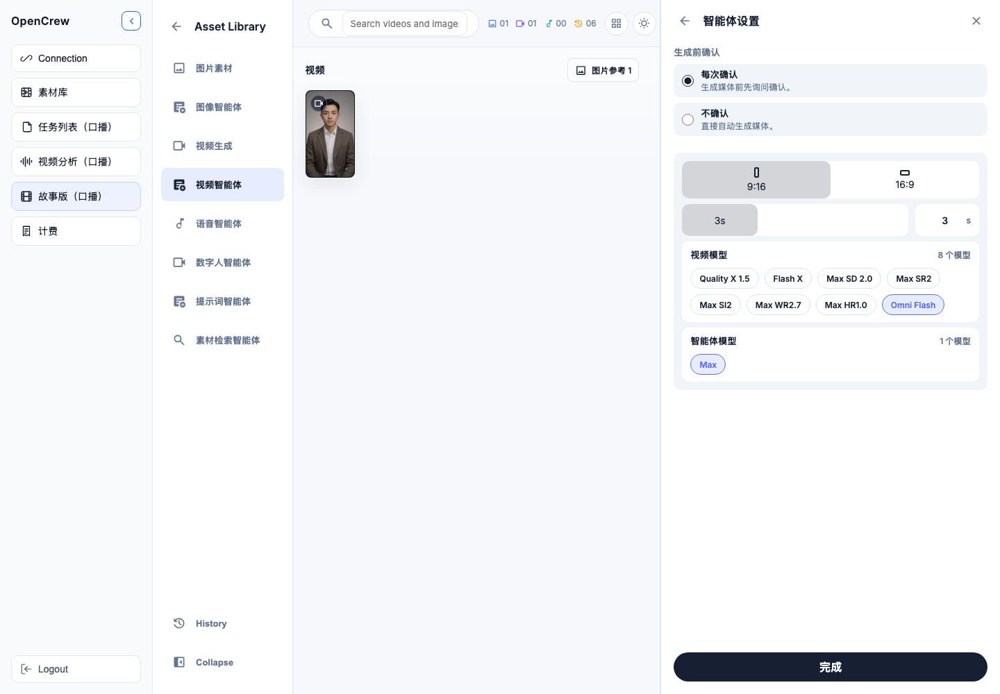
2.2 用户入口
- 进入“故事版（口播）”，打开一个任务的 Asset Library。
- 选择左侧“视频智能体”（对话式）或“视频生成”（直接工作区）。
- 点击输入区的“设置”，在“视频模型”中选择 Omni Flash，然后点击“完成”。
- 界面出现“有状态视频编辑”和三个操作入口，即说明能力生效。
3. 三种业务操作
| 操作 | 什么时候使用 | 结果 |
|---|---|---|
| 新建视频 | 只有文本或参考图，想建立全新创作链 | 创建 thread 与版本 1 |
| 上传视频编辑 | 已有本地视频，希望以它为起点修改 | 上传视频到 Files API，创建新的编辑链 |
| 继续编辑 | 要基于当前或历史成功版本做下一轮修改 | 从选中的 parent turn 创建新版本 |
3.1 新建视频
- 点击“新建视频”。
- 可选择 0–8 张参考图；输入清晰的画面、动作和修改目标。
- 发送后阅读付费确认，再点击“生成”。成功结果进入 Videos 区和当前版本链。
3.2 上传视频编辑
- 点击“上传视频编辑”，从素材区选择一个视频作为唯一视频输入；当前 Preview 优先使用不超过约 3 秒的短视频。
- 可额外添加参考图；不要添加音频，当前 Omni 接入不支持音频输入。
- 描述要保留与要改变的部分。系统会先把视频上传到供应商 Files API、等待 ACTIVE，再由模型根据文件输入推断 edit；输出画幅和时长继承输入视频。
3.3 继续编辑
- 在版本树中选中一个成功且云端状态仍有效的版本。
- 点击“继续编辑”，描述增量修改，例如“保持人物与镜头，只把背景改成黄昏”。
- 确认后生成新 turn。原版本不被覆盖，可以继续作为其他分支的父版本。
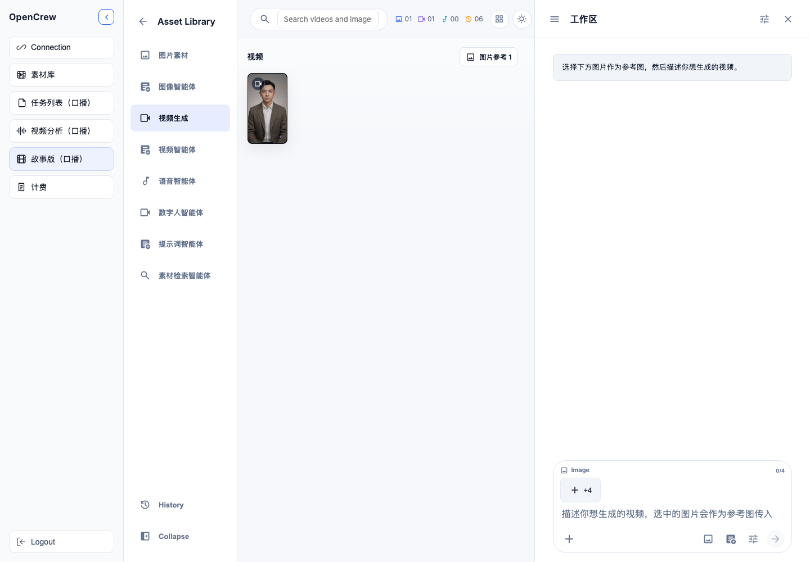
4. 版本链如何使用
新聊天默认显示“尚未创建版本”，不会偷偷继承同一任务中其他聊天的旧链。只有用户从素材或历史版本明确选择继续，才会加载对应 OpenCrew thread。
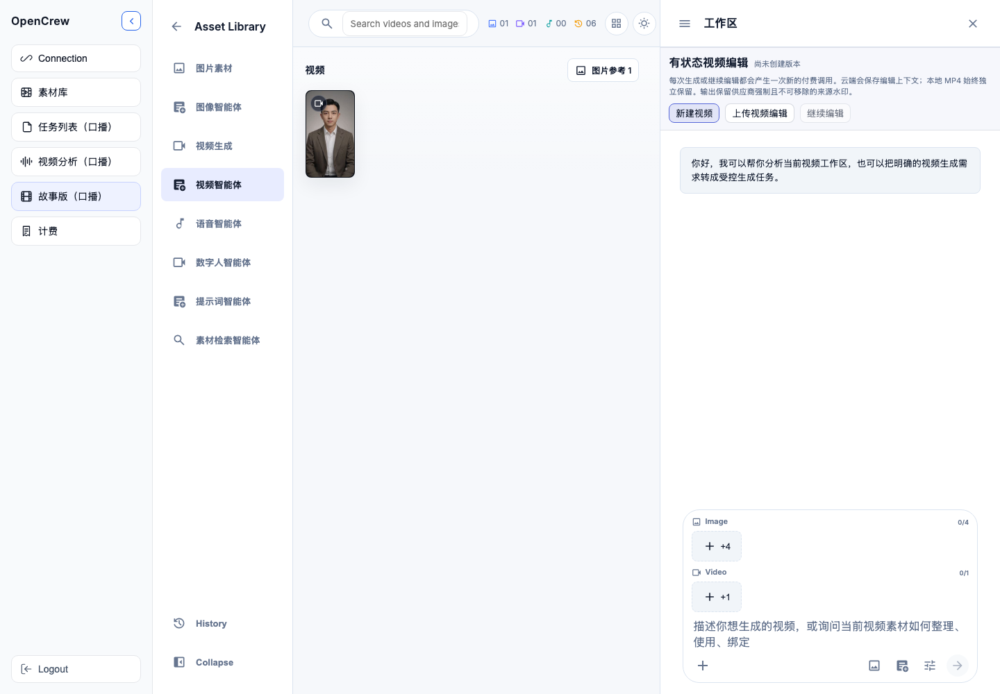
加载历史版本后，顶部显示当前版本和每个 turn 的状态。只有 completed + active 的版本能直接继续；失败、过期或已删除云状态的版本会提供“从本地视频新建链”回退。
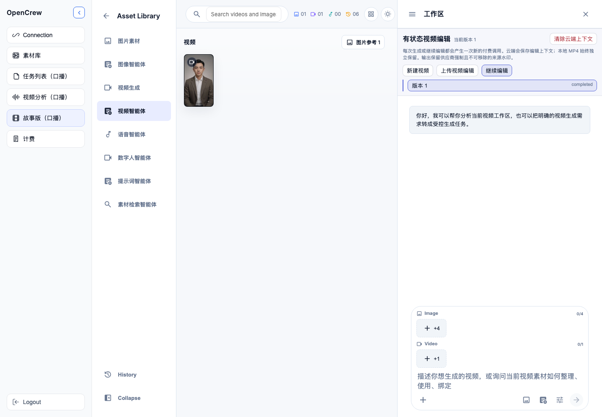
5. 确认、费用与输入限制
每次“新建、上传编辑、继续编辑”都是一次新的付费动作，不能把聊天中的一次确认复用到下一次。界面默认在发送前显示确认框。
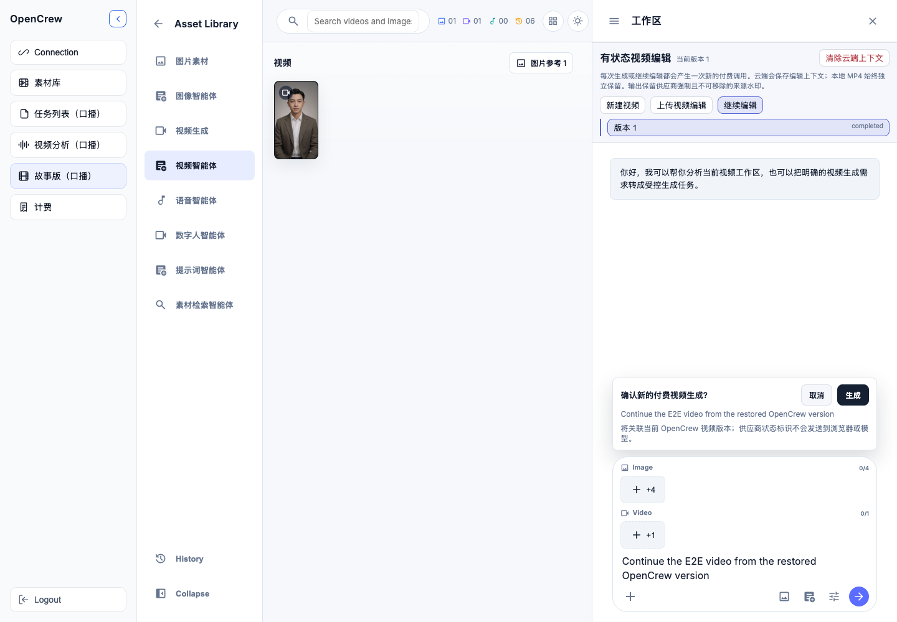
| 项目 | 当前接入约束 |
|---|---|
| 输出时长 | 新建/连续编辑首期固定 3 秒；上传 edit 继承输入时长；统一按最终 ffprobe 实际时长计量 |
| 画幅 | 新建/连续编辑选择 16:9 或 9:16；上传 edit 继承输入画幅 |
| 参考图片 | 0–8 张 |
| 参考视频 | 0–1 个；上传编辑使用 Files API，当前官方限制对约 3 秒短视频仍标为 Preview 风险 |
| 参考音频 | 本期不支持 |
| 价格快照 | 720p 视频输出约 US$0.10/秒，另有少量输入 token；Preview 价格可能变化，生成前应复核供应商价格页 |
确认后浏览器只提交 OpenCrew 的 video_thread_id、parent_turn_id 和每次动作唯一的 UUID。供应商 interaction ID 永远不进入浏览器请求。
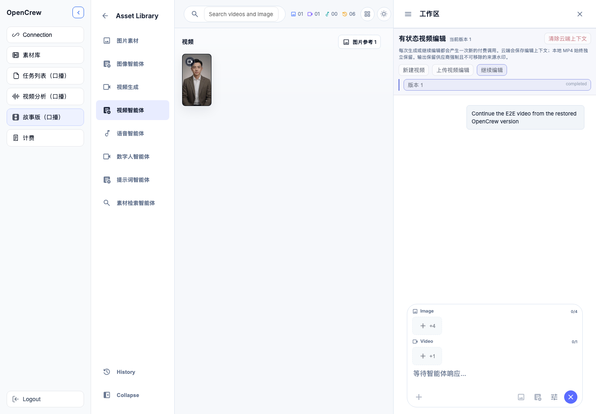
6. 云端上下文、过期和删除
- 云端状态：供应商保存 interaction 上下文，OpenCrew 只在后端加密边界内持有其标识。
- 本地视频：每个成功结果下载、校验、清除容器元数据并落为 MP4；删除云状态不会删除本地 MP4。
- 清除云端上下文：需要明确确认；删除失败会保留“待重试”状态，不伪装成功。
- 未知 POST：如果请求结果未知且没有拿到供应商 ID，系统绝不自动重发；用户显式清除后会把该本地 turn 标为失败/已删除并释放并发槽。
- 过期：上下文过期后不能继续原链，但可以从本地视频发起新的“上传视频编辑”链。
- 自动恢复：服务重启后，已获得供应商 ID 的请求只继续查询，不再次创建付费请求。
7. 工作原理（面向产品与技术）
| 阶段 | OpenCrew 做什么 | 业务意义 |
|---|---|---|
| 能力发现 | 只有服务端开关开启、Gemini 连接启用、Omni 别名存在时，公开 API 才返回 stateful_edit 能力。 | 独立灰度和快速止损，不影响其他视频模型。 |
| 动作准入 | 服务端按用户、会话和任务锁检查并发、小时/日次数和日预算；同一动作 UUID 可重放读取但不能重复付费。 | 控制成本，避免双击、网络重试或双 worker 重复生成。 |
| 供应商调用 | 上传视频先走 Files API 并等待 ACTIVE，以 document 输入让模型推断 edit，不发送 task/画幅/时长；首轮文本/图片显式发送任务，连续编辑只发送 previous_interaction_id 和输出格式。非幂等 POST 最多一次，拿到 ID 后立即持久化。 | 兼容当前 Preview 的三类不同请求结构，避免重复付费，并把“可能已经扣费但响应丢失”的风险限制在可审计状态。 |
| 状态隔离 | 供应商 ID 只存后端表；浏览器、智能体提示、SSE 和公开素材对象只看到 OpenCrew thread/turn。 | 避免供应商细节泄漏，也防止客户端伪造上游状态。 |
| 结果落盘 | 下载受信任 HTTPS 输出，校验大小/媒体、清洗容器元数据，记录实际时长用量，再推进 head。 | 本地资产可独立使用，计量贴近真实结果，失败不污染版本链。 |
8. 本轮验收结果与证据边界
- macmini-4 重启后前端 18080、后端 8011 健康；迁移
0025_video_interaction_threads已应用。 - 真实公开配置返回 Omni Flash，包含 text/image/reference/edit、stateful、固定 3 秒、16:9/9:16 能力，但不含 provider/model 内部字段。
- 真实 Chromium 选择 Omni Flash、验证 3s/min=3/max=3、显示设置与三种操作入口通过；测试后恢复任务原设置。
- 真实直接探针和真实浏览器产品链均通过：首轮、连续编辑各生成一个视频，第二轮父 turn 精确指向第一轮。
- 真实上传编辑通过：浏览器选择蓝色视频，Files API 上传后生成独立 edit turn，输出圆形变红；无父 turn，作为新链版本 1。
- 三段最终浏览器输出均为 1280×720、24fps、H.264 + AAC、3.008 秒；计量各记录 3.008 个
video_720p_second。 - 两轮链和上传 edit 均从浏览器清除云端状态成功，版本不可继续，但全部本地 MP4 仍可播放。
- unknown POST 防重发、并发槽保护和用户显式放弃均在真实浏览器测试中验证；失败不会推进链头。
- 公开 API、SSE、浏览器 artifact 均不含 Key、原始 Interaction ID 或视频 base64；设置和失败测试历史已恢复/清理。
- 本次变更后 Omni 专项：36 passed、3 subtests；PostgreSQL 行锁并发：1 passed；全量后端契约：1158 passed、1 skipped、233 subtests。
- 前端 Omni 契约、模型包泄漏守卫、泄漏策略自测和生产构建全部通过；模型目录探测 HTTP 200。
gemini-omni-paid-chain-20260723-v4.json；浏览器新建→继续编辑证据为 gemini-omni-paid-browser-20260723-v2.json；浏览器上传视频编辑证据为 gemini-omni-paid-upload-browser-20260723-v9.json。最终浏览器产品验收共 3 次成功调用、9 秒输出，名义约 US$0.90。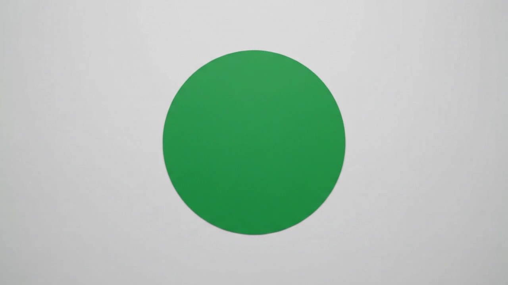
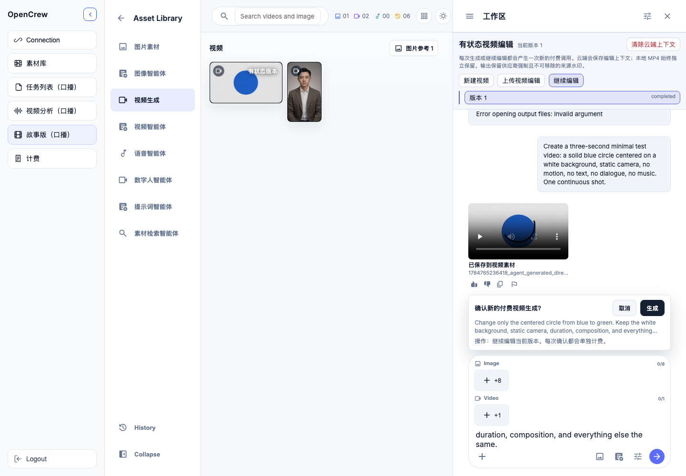
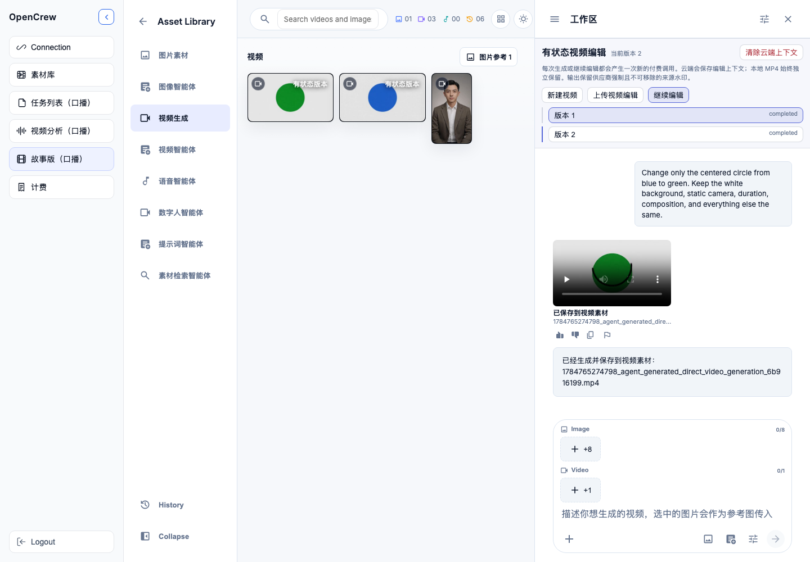
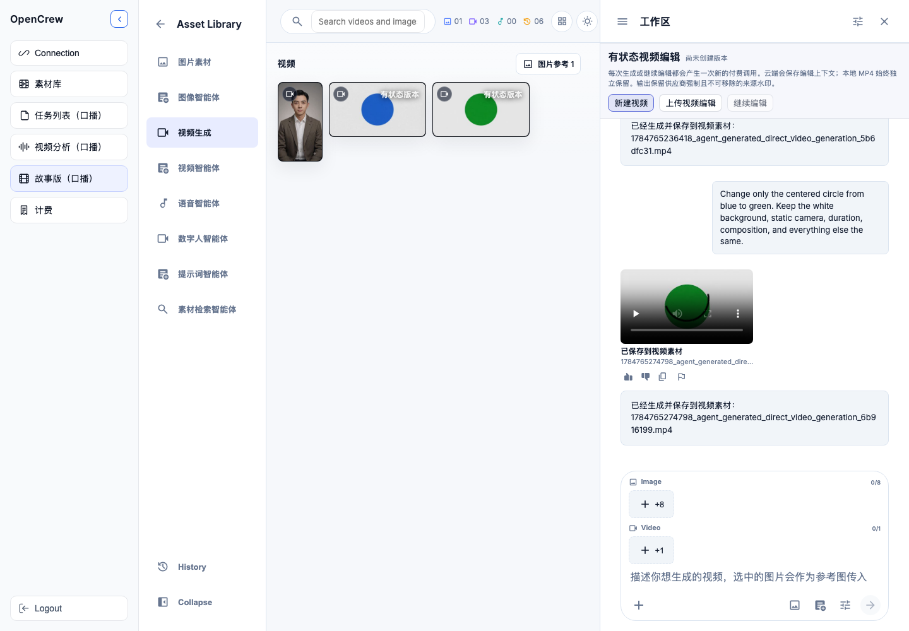
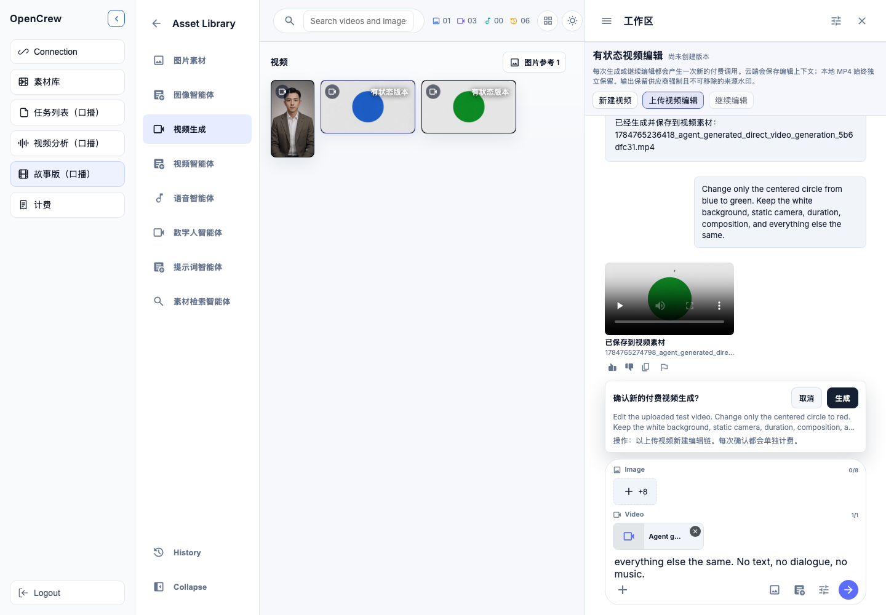
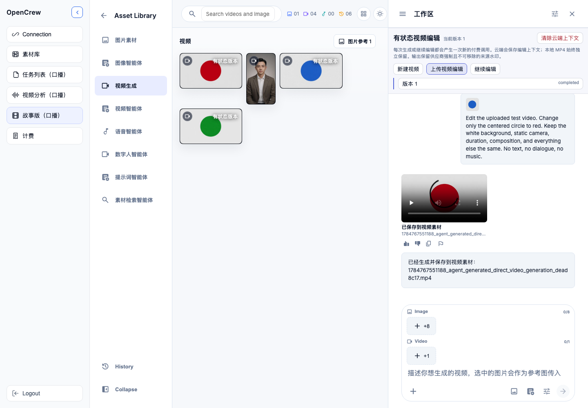
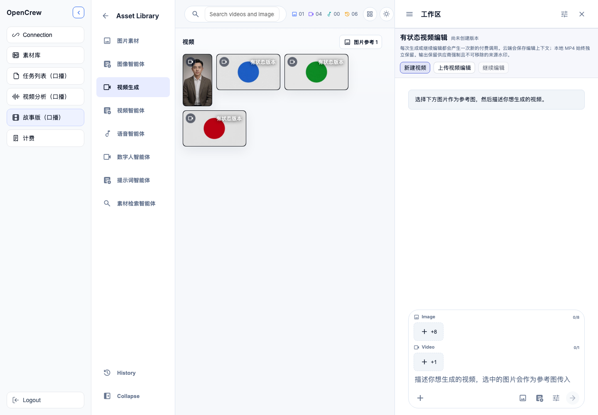
generation_config.video_config 也被拒绝；连续编辑不能同时发送 previous_interaction_id 与 task；上传 edit 必须使用 Files URI 的 document 输入并由模型推断任务，不能发送 task、aspect 或 duration。适配器、恢复路径、模型能力和契约均已按当前行为修正。.tmp 结束，导致 ffmpeg 无法推断 MP4 输出格式；现已改为 .provider.mp4。同时把清洗/校验异常统一映射为稳定公开错误码，避免本机路径和原始 ffmpeg 输出进入 SSE 或历史消息；相关失败测试消息已从本机测试会话清理，失败 turn 保留在数据库中供审计。费用口径：最终直接链约 US$0.60，最终浏览器新建/继续链约 US$0.60，最终浏览器上传 edit 约 US$0.30；另有一次 3 秒 API 漂移定位输出和一次“供应商成功、首次本地落盘失败”的 3 秒输出。整个调试窗口共产生约 21 秒供应商视频输出，按 US$0.10/秒名义约 US$2.10，另有少量输入 token。上传编辑的参数校验请求均未产生 Interaction ID 或视频输出。
外部行为依据（检索日期 2026-07-23）：Gemini Omni 官方文档、Omni 模型卡、Gemini API 定价、Interactions 2026-05 迁移说明。Preview 能力和价格仍可能变化，上线前应重新核对。
9. 建议人工验收步骤
- 在任务 305 的视频智能体设置中确认 Omni Flash 可见，选择后固定为 3s，参考位变为 8 图 + 1 视频。
- 分别切换“新建视频、上传视频编辑、继续编辑”，确认没有版本时“继续编辑”禁用。
- 新建聊天，确认不会继承同任务的旧版本；再从一个历史视频选择继续，确认对应版本树加载。
- 输入提示词并发送，只检查付费确认框后取消；确认每次都重新询问，不直接扣费。
- 上传编辑时确认恰好选择 1 个短视频，付费确认写明“以上传视频新建编辑链”；输出应继承输入画幅/时长。
- 如需重复供应商冒烟测试，先复核官方价格；两轮链使用 US$1.20/2 次/6 秒门禁，上传 edit 使用 US$0.30/1 次/3 秒门禁，均不得加入默认测试。
- 检查每个成功版本均落盘；前端只见 OpenCrew ID；计量使用 ffprobe 实际时长；清除云端上下文后本地 MP4 仍保留。
- 模拟云状态过期/删除/unknown，确认不会自动重发，显式清理可释放并发槽并保留审计记录。
- 关闭
OPENCREW_GEMINI_OMNI_ENABLED并重启，确认 Omni 入口完全隐藏、其他视频模型不受影响；再恢复为 1。